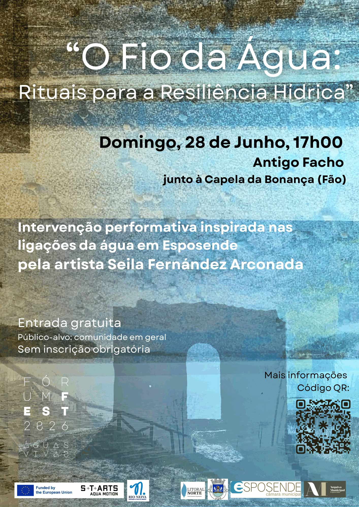
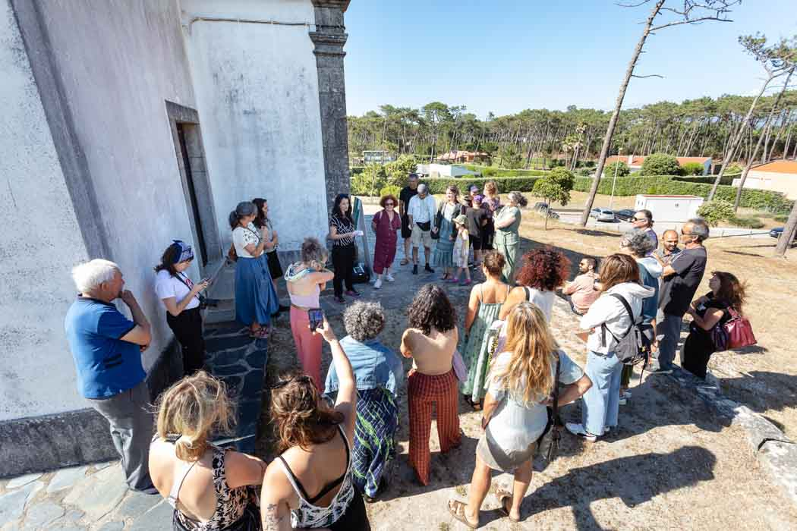

"O Fio da Água: Rituals for Water Resilience" é uma intervenção performativa inspirada nas ligações à água em Esposende, partindo de memórias de cheias e inundações e de formas de nos relacionarmos com os ecossistemas aquosos, adaptando-nos e transformando-nos neles em tempos de incerteza. Um momento de confluência entre corpo, território e água, onde memória, presente e futuro se cruzam.
Este ritual contemporâneo foi criado por Seila Fernández Arconada como um espaço experiencial-experimental para a imaginação e a coexistência com a água e as suas incertezas, através da ativação do antigo Facho da Bonança em Fão (Esposende, Portugal). Decorreu no dia de lua cheia de junho de 2026, como uma performance participativa, na qual os participantes foram convidados a habitar as antigas ruínas da Bonança, guiados por uma peça sonora transmitida através de um rádio, como elemento simbólico de luz, orientação e memória.
Aqui pode experienciar parte deste evento em primeira mão através da nossa criação em realidade aumentada. Para um contexto mais aprofundado sobre a intervenção performativa, continue a leitura abaixo. Mais informações revelam as intenções e o propósito da artista, uma vez que este evento é um dos resultados do projeto de investigação artística de um ano, "O Fio da Água".
Loading...
Digitalize para experienciar a Intervenção
Esta experiência de Realidade Aumentada está disponível para
iPhone
e
Android.
Use a câmara do seu telemóvel para digitalizar o código QR
e iniciar a experiência de Realidade Aumentada.
Contexto geral do projeto
"O Fio da Água: Abraçar o Fluxo da Água para Futuros Resilientes" explora os fios de água que tecem a relação entre a comunidade local e o território, procurando transformar as perceções que as populações sujeitas a cheias têm das incertezas da água numa coexistência imaginativa. Através de uma investigação transdisciplinar centrada no processo, o projeto debruça-se sobre os fluxos ocultos da água, as adaptações históricas e as memórias da comunidade sobre os episódios de cheia, explorando a coexistência entre humanos e água para inspirar novas formas de "estar com a água".
O projeto deu vida a um vasto leque de obras artísticas e atividades comunitárias, entre as quais: uma exposição em constante transformação, patente durante um mês no Arquivo local; uma intervenção participativa sob lua cheia, no antigo farol, combinando som, criação coletiva e escultura em realidade aumentada (RA) como forma ritual de comunhão; uma série de publicações experimentais concebida como "exposição portátil"; espaços públicos de encontro e partilha, como as "Conversas sobre Cheias" ("Flood Conversations") e podcasts sonoros experimentais, entre outros.
Liderado por Seila Fernández Arconada (artista espanhola radicada em Berlim). Foi selecionado para o projeto "S+T+ARTS AQUA MOTION: Transformative Synergies for Improved Water Management", apoiado pela Comissão Europeia. Este projeto, que responde ao desafio "Moving Waters - Reimagining Flood Resilience", é desenvolvido com a Rio Neiva - Associação de Defesa do Ambiente, parceira de acolhimento em residência do S+T+ARTS. Mais informações em: linktr.ee/ofiodaagua
Narração do evento e documentação visual
Assim que todos chegaram e foi feita uma breve apresentação no centro das ruínas do facho, os participantes receberam rádios como ferramenta de conectividade, guiando-os em grupos através de uma experiência partilhada de escuta de um programa de rádio.
A narrativa experimental levou os participantes numa viagem para reconhecer e sentir a água impressa no território, e como esta informação, viajando do passado para uma compreensão transdisciplinar do território fundida com a imaginação, pode transformar-se em conhecimento para lidar com incertezas, particularmente as cheias e inundações fluviais e costeiras, uma vez que fazem parte da história local. O objetivo era tornar visíveis os fios invisíveis da água, partilhando investigação e, ao mesmo tempo, inspirando questões.
A voz do rádio convidou os participantes a caminhar até ao oceano e regressar, guiando-os na criação conjunta de um ex-voto* como um ritual coletivo, trazendo um elemento ou pensamento significativo, reimaginando a sua ligação a este território aquoso, ao mesmo tempo que suscitava ideias sobre 'como podemos tornar-nos mais resilientes à água?'. Os passos seguintes levaram os participantes a construir este ex-voto em conjunto, com um elemento final para encerrar o ciclo ritual: um elemento escultórico criado em realidade aumentada. Um objeto virtual 3D criado como um diálogo imaginativo com as ruínas do antigo farol, trazendo "luz" com a lua cheia, destacando descobertas da investigação e elementos naturais que possibilitam a vida no território local. Com o link acima, pode experienciar este elemento por si mesmo.
No final, os participantes tiveram a oportunidade de discutir a experiência e visitar a Capela de Nossa Senhora da Bonança, construída ao lado, onde uma porta antiga contém as marcas e assinaturas gravadas de famílias de pescadores e agricultores, os primeiros habitantes do território, detentoras de um conhecimento situado sobre as razões pelas quais as pessoas se fixaram ali originalmente.
*Ex-votos são criações, formas de gratidão ou oferendas dadas a uma divindade ou espaço sagrado em agradecimento por um milagre ou proteção durante uma crise. Nas comunidades costeiras, os ex-votos estão profundamente ligados à água, como perigos fluviais e oceânicos e eventos climáticos extremos, simbolizando a memória coletiva de uma comunidade sobre a sobrevivência perante incertezas naturais. Um ex-voto é colocado depois de algo acontecer, como um ato de agradecimento público e testemunho.
*A narrativa experimental foi escrita como uma nova criação para este evento. É inspirada na investigação realizada ao longo do projeto, desde observações, descobertas e histórias locais até diferentes perspetivas disciplinares, arquivos históricos e dados, com o propósito de criar uma narrativa situada sobre as cheias e inundações e a relacionalidade com a água a nível local.
Esta intervenção decorreu no dia de lua cheia de junho de 2026. Fez parte do projeto "O Fio da Água: Abraçar o Fluxo da Água para Futuros Resilientes" de Seila Fernández Arconada. Foi apresentada no Águas Vivas Forum Fest, organizado pela Rio Neiva - Associação de Defesa do Ambiente. Promovido pelo S+T+ARTS AQUA MOTION. Este evento em particular foi uma colaboração com a Junta de Freguesia de Fão, o Município de Esposende, o Arquivo Municipal e o Parque Natural do Litoral Norte.
Documentação visual do evento. Fotografias maioritariamente da autoria de Guilherme Maranhão, e Rio Neiva – Associação de Defesa do Ambiente:
